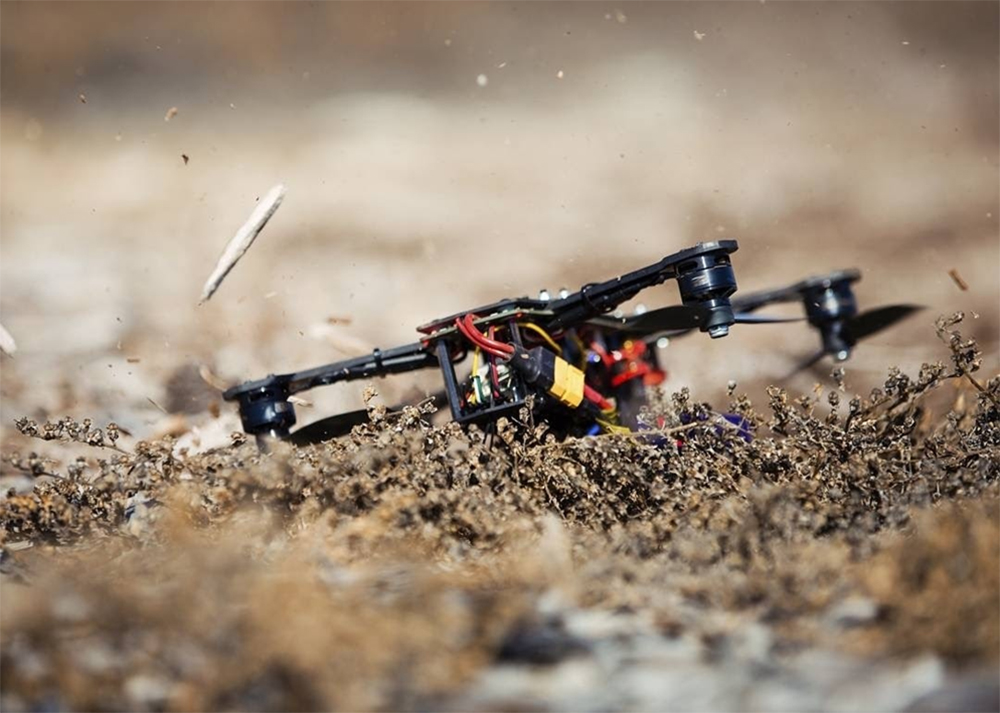

Completează acest formular de fiecare dată când ai nevoie de mentenanță.
Avem piese de schimb pentru orice situație.

| Inventar Hangar 2026 | ||||||||||||||
|---|---|---|---|---|---|---|---|---|---|---|---|---|---|---|
|
Componente Cadru Carbon T700 |
|
|
||||||||||||
| Disponibilitate: Livrare din stoc în 24 de ore. | ||||||||||||||